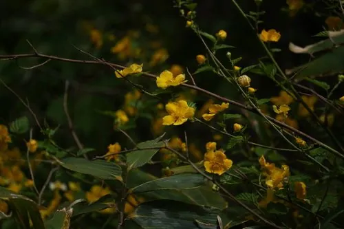

灌木与花木 · 植物界
棣棠 Kerria japonica

中国常见的落叶灌木，枝条细长、春季开金黄色小花，重瓣品种花如金色小球，是庭院与林下的观赏植物。
- 分类
- 门被子植物门纲木兰纲目蔷薇目科蔷薇科属棣棠属
- 栖息环境
- 海拔 1500 米以下的山坡、林缘与庭院，喜光稍耐阴，耐寒耐旱
- 地理分布
- 中国华北、华东、华中及西南地区，日本也有分布
- 保护级别
- 暂无评估；中国未列入国家重点保护野生植物名录
物种志
棣棠为落叶灌木，高可达 2 m，枝条细长、绿色，常拱形下垂；叶片互生，卵形至卵状披针形，边缘具重锯齿，叶面绿色、叶背淡绿。花期 4–5 月，花单生于侧枝顶端，花瓣 5 枚、金黄色，花径 3–4 cm；重瓣品种花瓣密集、形似金色小球；瘦果倒卵形，成熟时褐色。
棣棠原产中国华北、华东、华中及西南地区，也见于日本，中国各地栽培，喜光、稍耐阴，耐寒、耐旱，适宜疏松肥沃、排水良好的土壤，耐修剪。春季金花满枝，是庭院、林缘与花境中常见的观赏灌木；重瓣棣棠观赏价值更高，常与假山、水景搭配。茎与花可入药，有消肿止痛、止咳化痰之效；枝条可用于编织。棣棠在日本文化中也很常见，常被种植于庭园与寺院中。
形态与习性
- 株高可达 2 m，枝条绿色拱形下垂
- 花期4–5 月，花金黄色
- 果期7–8 月，瘦果褐色
- 光照喜光，稍耐阴
- 水分喜湿润，怕积水
- 土壤疏松肥沃、排水良好的壤土
- 主要用途庭院与花境观赏、茎花入药、枝条编织
趣味知识
- 棣棠的枝条细长、绿色，常拱形下垂，春季开满金黄色小花。
- 重瓣棣棠的花瓣密集、形似金色小球，观赏价值比单瓣品种更高。
- 棣棠的茎与花可入药，有消肿止痛、止咳化痰的功效。
- 棣棠在日本庭园与寺院中也很常见，是东亚共有的春季花木。